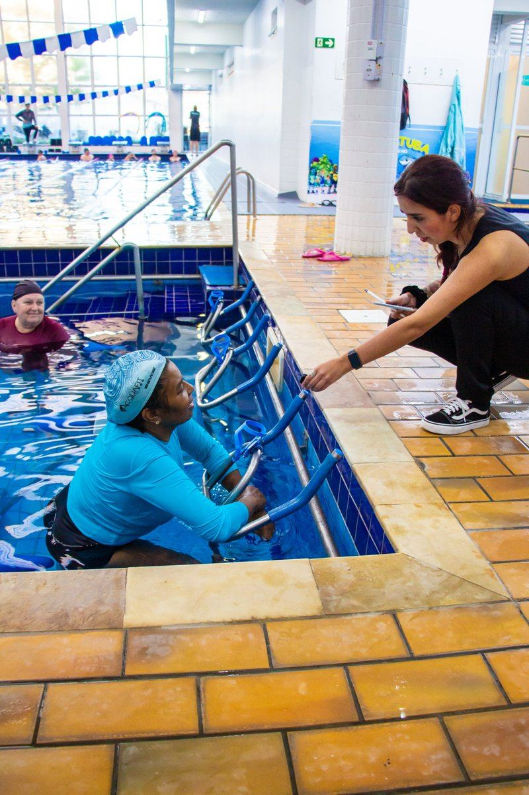
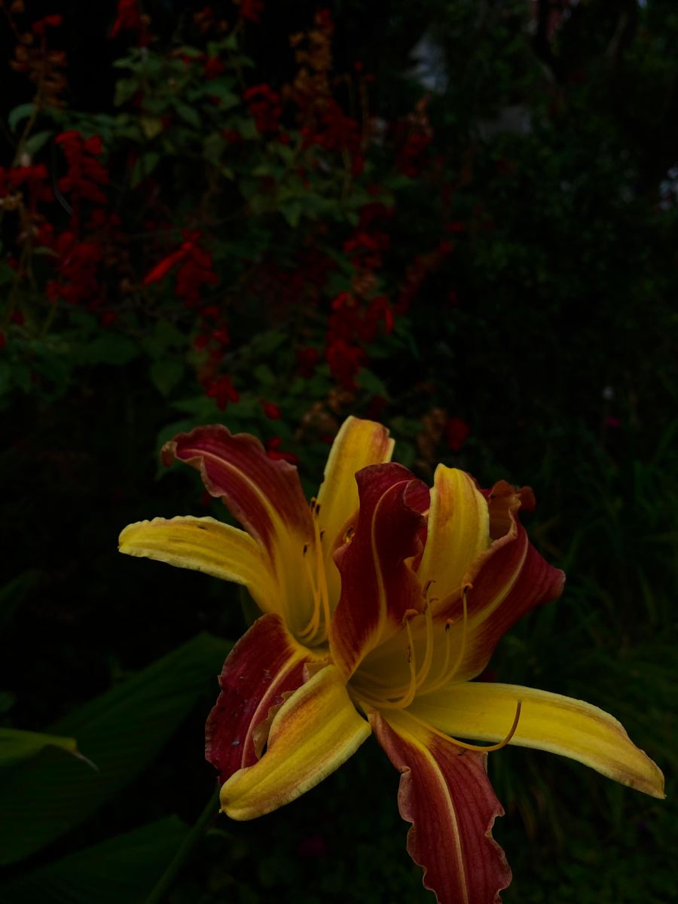
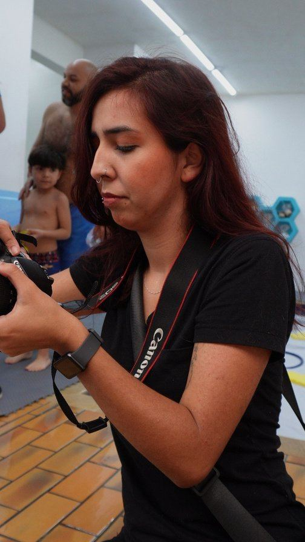
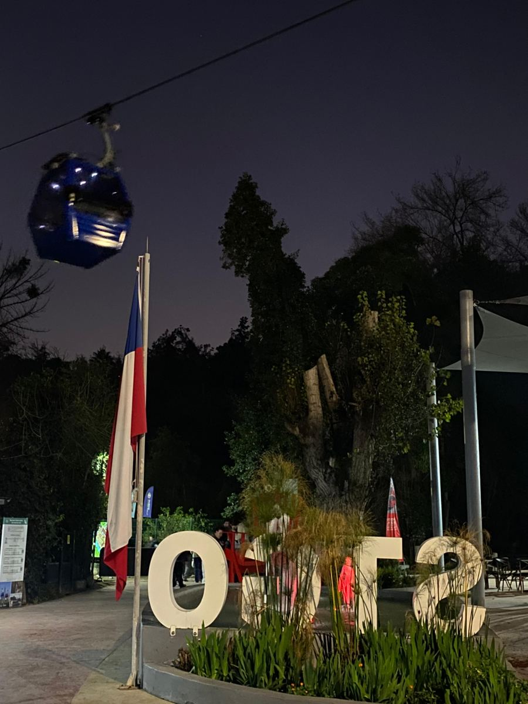
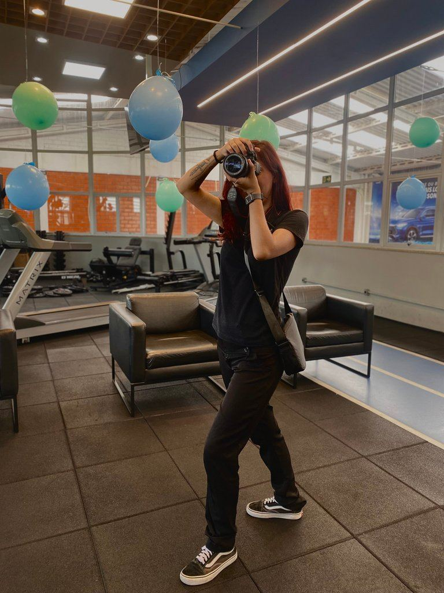
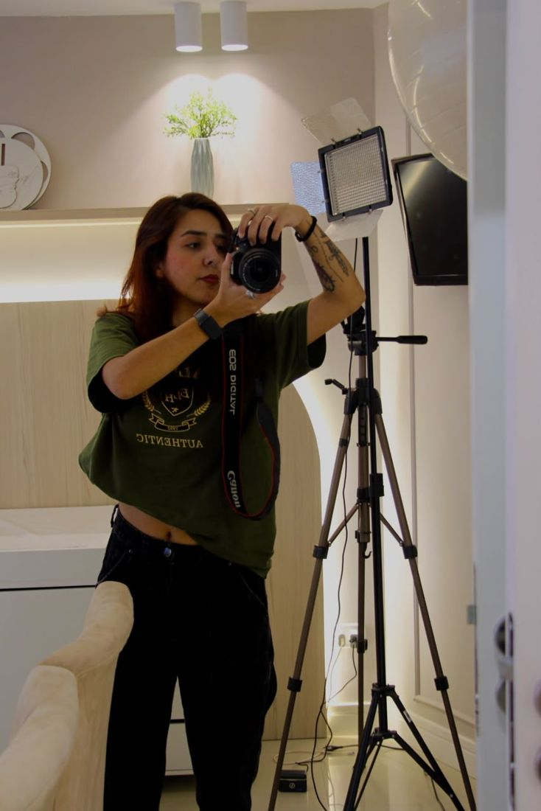
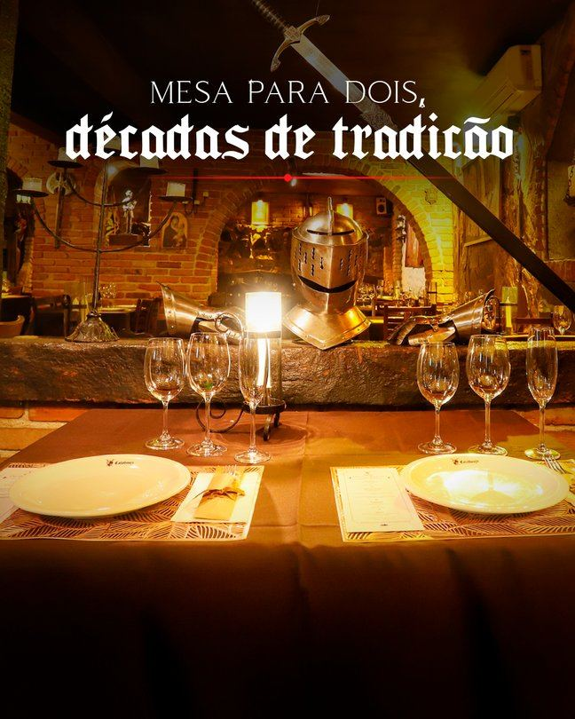
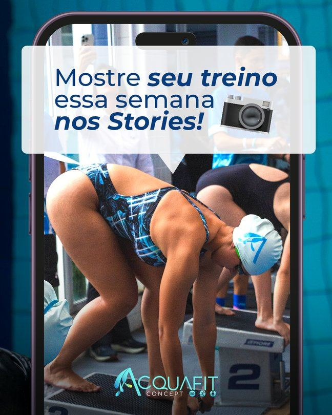
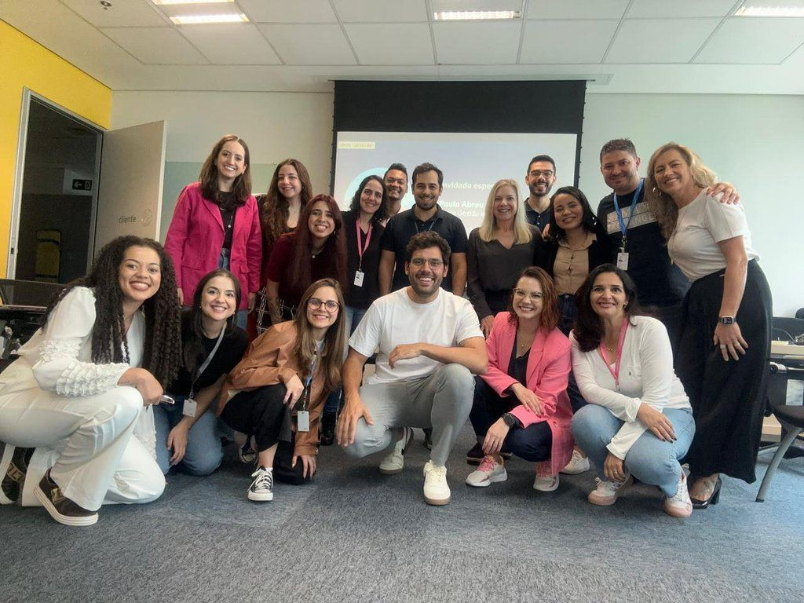
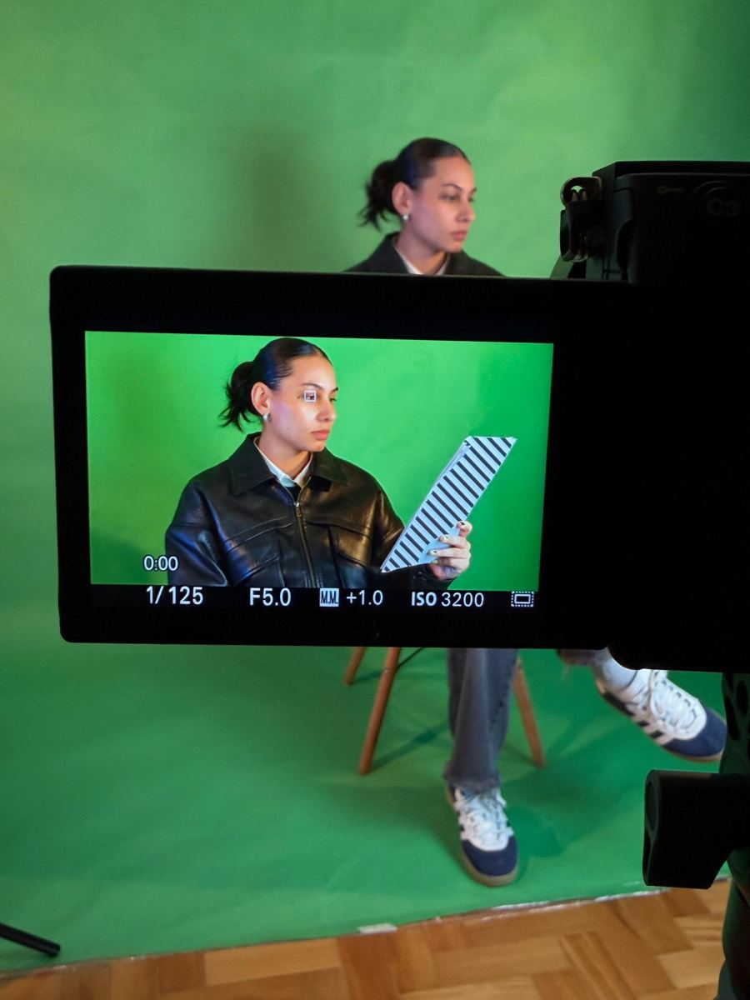

Eu mesma gravo e edito
Do roteiro ao corte final: capto em set, em evento e com a câmera na mão, e edito no Premiere, After Effects e CapCut. Sem depender de ninguém pra conteúdo sair.
Curitiba, PR · Brasil ✦ Marketing Digital
Eu faço sua marca ser encontrada e te ajudo
em toda a jornada do seu cliente.
SEO ✦ GEO ✦ Tráfego Pago ✦ Conteúdo que comunica o que a sua marca deve comunicar.






01Apassa o mouse e roda o filme ✦
quem tá por trás ✦
Há mais de 4 anos eu vivo entre dados e criatividade: gerencio campanhas de Meta Ads e Google Ads e otimizo sites para aparecerem no topo.
Já passei por agências, produtora, pela área da saúde e pelo ecossistema do Grupo Boticário. Meu superpoder? Unir dados e criatividade: traduzo números em decisões e transformo conteúdo frio em história que faz as pessoas se enxergarem na sua marca.
Trabalho de um jeito humanizado e colaborativo: pra mim, projeto bom é o que se constrói em equipe, tratando gente como gente, na frente e atrás das câmeras.
por onde passei: Grupo Boticário · Action Films · Petit Comunicação · MedSul Saúde
o que eu trago pro seu time ✦
Do roteiro ao corte final: capto em set, em evento e com a câmera na mão, e edito no Premiere, After Effects e CapCut. Sem depender de ninguém pra conteúdo sair.
Crio o conteúdo e leio o resultado dele. Sei o que performou, por que performou e o que mudar na próxima.
Configuro e conserto Pixel, GTM e GA4. Quando o número bate com a realidade, a decisão de investimento fica segura.
Fluxos de nutrição, CRM e automações pra lead chegar quente no time de vendas, e não parar no meio do caminho.
Trabalho com GEO: conteúdo pensado pra sua marca ser citada pelo ChatGPT, Gemini e Perplexity, não só pelo Google.
Cresci de assistente a analista porque sou fácil de trabalhar junto: comunicação clara, prazo cumprido e leveza no dia a dia.
o que eu faço no dia a dia ✦
campanha quebrada? dado errado? eu conserto! 🔨
Gestão e otimização de campanhas no Meta Ads e Google Ads (Search, Display e YouTube), feitas pra chegar em quem já procura o que você vende: palavra-chave certa, audiência certa, lance certo.
Diagnóstico e correção de conversões via Meta Pixel e Google Tag Manager. Se o dado tá errado, a decisão vem errada. Eu garanto a integridade do analytics de ponta a ponta.
Análise de CPC, CPL, CTR e ROAS no GA4 e Looker Studio, com recomendações orientadas a impacto financeiro, não a print de dashboard.
Otimização de conteúdo para LLMs (ChatGPT, Gemini, Perplexity), web semântica e Brand Citation. O futuro da busca já começou e eu já tô nele.
Planejamento de textos e páginas que respondem exatamente o que o seu cliente pesquisa no Google. Conteúdo que constrói autoridade de marca e sobe posição no orgânico.
Briefings estratégicos para peças gráficas e audiovisuais, roteiro para vídeo e direção de criativos alinhados ao funil de conversão.
Nada de post por postar: cada publicação sai com intenção e qualidade, guiada por tendência de busca e pelo formato que melhor performa no orgânico.
Coordenação de produções audiovisuais e materiais gráficos conforme branding, do briefing ao corte final, com Premiere, After Effects e CapCut.
prova real, publicada ✦



No Grupo Boticário, ajudei a organizar o maior evento da área em Curitiba, reunindo equipes do Brasil inteiro: da logística de hospedagem à acessibilidade dos espaços, cada detalhe pensado pra experiência das pessoas.
construído junto, do início ao fim ✦
onde eu já dei as caras ✦

🔊 os vídeos do meio têm áudio: clique pra ouvir
a trajetória até aqui ✦
Especialista em Tráfego Pago e Marketing Digital
Campanhas Meta & Google Ads com foco em geração de leads, correção de rastreamento (Pixel/GTM), relatórios de performance no GA4 e testes de visibilidade de marca em LLMs.
Social Media
Estratégia de conteúdo com SEO on-page, planejamento de pautas e briefings estratégicos para materiais gráficos e audiovisuais.
Comunicação Corporativa
Endomarketing e comunicação interna na interface entre RH e Comunicação, com contato direto com o ecossistema de marcas do grupo.
Analista de Marketing e Social Media
Campanhas digitais, análise de KPIs, controle de orçamento (ROAS e CPA) e coordenação de produções audiovisuais.
✦ Pós em Marketing e Comunicação (Faculdade Líbano) · Bacharel em Negócios Internacionais (FAE) · Espanhol avançado · Inglês avançado
quem já trabalhou comigo ✦
Fui gestor da Fernanda na MedSul Saúde – Evangélico Saúde, onde ela iniciou como assistente de marketing e depois foi promovida a analista, responsável pela gestão das mídias digitais e pela promoção das redes sociais da empresa. Mostrou-se extremamente competente e comprometida, com um relacionamento exemplar com a equipe e sempre zelosa com os prazos. Grande pessoa e muito profissional!
ex gestor
A Fernanda é uma profissional criativa, comunicativa e muito inspiradora. Sua leveza no relacionamento com as pessoas, aliada à capacidade de transformar excelentes ideias em resultados, faz toda a diferença. É um prazer trabalhar com alguém tão talentosa, dedicada e sempre disposta a colaborar. Recomendo a Fernanda com muita confiança!
colega de equipe
como a gente trabalha junto ✦
Eu cuido de cada etapa da jornada do seu cliente, pra ninguém se perder no caminho.
SEO, GEO e tráfego pago pra sua marca aparecer pra quem já procura o que você vende.
Conteúdo, vídeo e storytelling que fazem as pessoas se enxergarem na sua marca.
Rastreamento certinho, CRM e automações pra cada lead chegar quente no seu comercial.
Relatórios que viram decisão: o que funcionou, o que ajustar e onde investir mais.